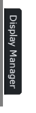
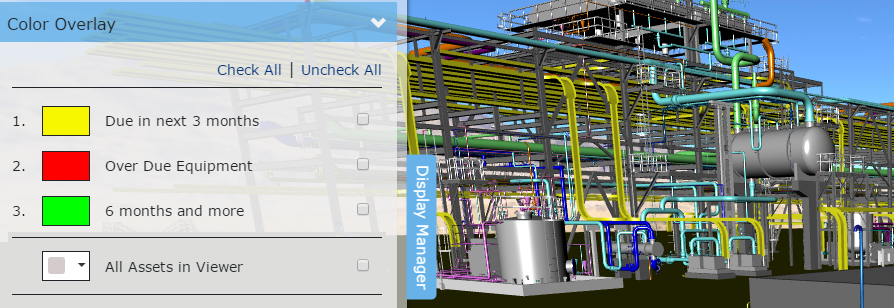
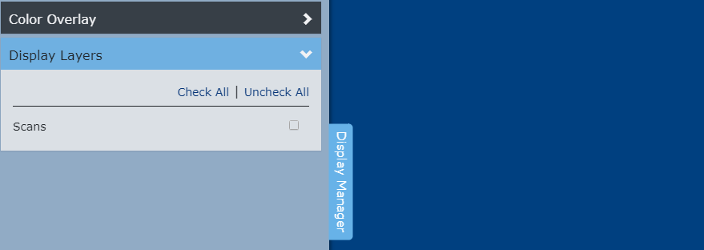
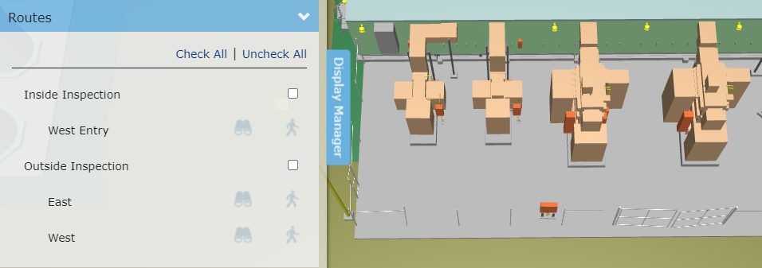

显示管理器
Knowledge Book显示管理器允许您管理查看器中显示的内容。单击Knowledge Book查看器左侧的“显示管理器”选项卡可以显示显示管理器。再次单击“显示管理器”选项卡可隐藏显示管理器。

颜色叠加
知识视图中的资产可以按资产列表进行组织。资产可以属于零个或多个资产列表。资产列表有颜色。单击颜色叠加扩展器以打开/关闭资源列表颜色。打开资源列表的颜色将覆盖资源的本机颜色。属于多个资产列表的资产将以优先级最高的资产列表的颜色显示。默认情况下，每个知识视图始终有一个“查看器中的所有资产”列表。您可以更改此默认列表的颜色。您无法更改资产列表的颜色。您无法更改资产列表的优先级。

关闭资产列表的颜色将以其本机（固有）颜色显示其资产。

| V-Suite CORE知识视图激活的显示过滤器将被转换并传输到V-Suite资产列表。 |

显示层
标记点标签和标签绘制在查看器的 2D 画布上。单击“显示图层”扩展器可显示或隐藏 2D 画布图层。

如果知识视图包含扫描，显示管理器将包含一个用于在 3D 查看器中显示或隐藏扫描的部分。


路线
知识视图中包含的任何路由都将在显示管理器的“路由”部分中列出。路线列表允许在 3D 查看器中显示或隐藏各个路线。

选择其中一条路线旁边的复选框将在查看器内显示该路线的 3D 表示。
选择路线并在查看器中显示后，您可以利用路线命令。


使用检查全部 链接以在查看器中显示所有可用路线；单击取消选中全部以隐藏所有路由。